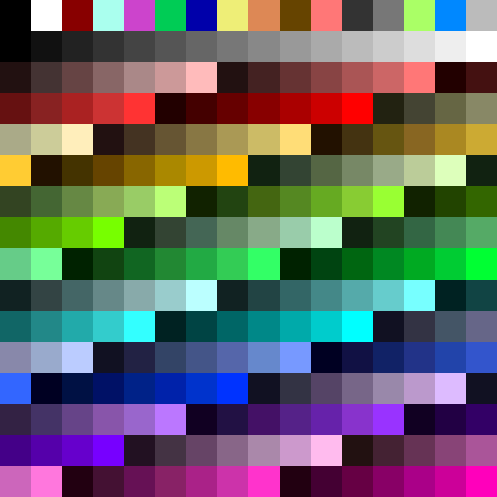
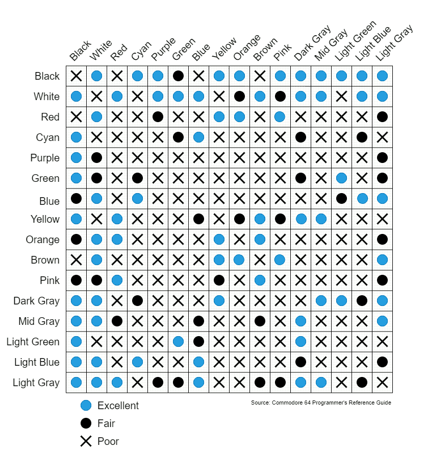
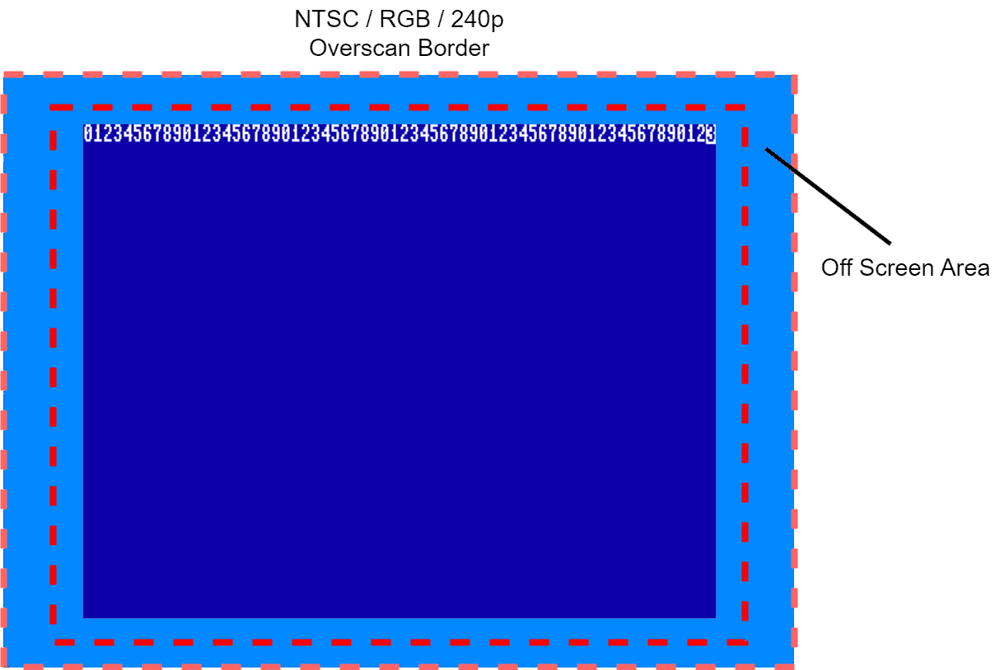

Chapter 9: VERA Programmer’s Reference#
This document describes the Versatile Embedded Retro Adapter or VERA. Which was originally written and conceived by Frank van den Hoef.
The VERA video chip supports resolutions up to 640x480 with up to 256 colors from a palette of 4096, two layers of either a bitmap or tiles, 128 sprites of up to 64x64 pixels in size. It can output VGA as well as a 525 line interlaced signal, either as NTSC or as RGB (Amiga-style).
The FPGA core used in the Commander X16 has been forked from Version 0.9 of the VERA. The original documentation can be found here.
The Commander X16 uses a modified version of VERA which includes extra functionality, notably the FX Aid additions. See Chapter 10 for more information on the FX additions.
The VERA consists of:
Video generator featuring:
Multiple output formats (VGA, NTSC Composite, NTSC S-Video, RGB video) at a fixed resolution of 640x480@60Hz
Support for 2 layers, both supporting either tile or bitmap mode.
Support for up to 128 sprites.
Embedded video RAM of 128kB.
Palette with 256 colors selected from a total range of 4096 colors.
16-channel Programmable Sound Generator with multiple waveforms (Pulse, Sawtooth, Triangle, Noise)
High quality PCM audio playback from an 4kB FIFO buffer featuring up to 48kHz 16-bit stereo sound.
SPI controller for SecureDigital storage.
Registers#
$9F20-$9F28#
| Addr | Name | Bit 7 | Bit 6 | Bit 5 | Bit 4 | Bit 3 | Bit 2 | Bit 1 | Bit 0 |
|---|---|---|---|---|---|---|---|---|---|
| $9F20 | ADDRx_L (x=ADDRSEL) | VRAM Address (7:0) | |||||||
| $9F21 | ADDRx_M (x=ADDRSEL) | VRAM Address (15:8) | |||||||
| $9F22 | ADDRx_H (x=ADDRSEL) | Address Increment | DECR | Nibble Increment | Nibble Address | VRAM Address (16) | |||
| $9F23 | DATA0 | VRAM Data port 0 | |||||||
| $9F24 | DATA1 | VRAM Data port 1 | |||||||
| $9F25 | CTRL | Reset | DCSEL | ADDRSEL | |||||
| $9F26 | IEN | IRQ line (8) | Scan line (8) | - | AFLOW | SPRCOL | LINE | VSYNC | |
| $9F27 | ISR | Sprite collisions | AFLOW | SPRCOL | LINE | VSYNC | |||
| $9F28 | IRQLINE_L (Write only) | IRQ line (7:0) | |||||||
| $9F28 | SCANLINE_L (Read only) | Scan line (7:0) | |||||||
$9F29-$9F2C#
DCSEL=0
| Addr | Name | Bit 7 | Bit 6 | Bit 5 | Bit 4 | Bit 3 | Bit 2 | Bit 1 | Bit 0 |
|---|---|---|---|---|---|---|---|---|---|
| $9F29 | DC_VIDEO | Current Field | Sprites Enable | Layer1 Enable | Layer0 Enable | NTSC/RGB: 240P | NTSC: Chroma Disable / RGB: HV Sync | Output Mode | |
| $9F2A | DC_HSCALE |
Active Display H-Scale | |||||||
| $9F2B | DC_VSCALE |
Active Display V-Scale | |||||||
| $9F2C | DC_BORDER |
Border Color | |||||||
DCSEL=1
| Addr | Name | Bit 7 | Bit 6 | Bit 5 | Bit 4 | Bit 3 | Bit 2 | Bit 1 | Bit 0 |
|---|---|---|---|---|---|---|---|---|---|
| $9F29 | DC_HSTART | Active Display H-Start (9:2) | |||||||
| $9F2A | DC_HSTOP | Active Display H-Stop (9:2) | |||||||
| $9F2B | DC_VSTART | Active Display V-Start (8:1) | |||||||
| $9F2C | DC_VSTOP | Active Display V-Stop (8:1) | |||||||
DCSEL=2
| Addr | Name | Bit 7 | Bit 6 | Bit 5 | Bit 4 | Bit 3 | Bit 2 | Bit 1 | Bit 0 |
|---|---|---|---|---|---|---|---|---|---|
| $9F29 | FX_CTRL | Transp. Writes | Cache Write Enable | Cache Fill Enable | One-byte Cache Cycling | 16-bit Hop | 4-bit Mode | Addr1 Mode | |
| $9F2A | FX_TILEBASE (Write only) |
FX Tile Base Address (16:11) | Affine Clip Enable | 2-bit Polygon | |||||
| $9F2B | FX_MAPBASE (Write only) |
FX Map Base Address (16:11) | Map Size | ||||||
| $9F2C | FX_MULT (Write only) |
Reset Accum. | Accumulate | Subtract Enable | Multiplier Enable | Cache Byte Index | Cache Nibble Index | Two-byte Cache Incr. Mode | |
DCSEL=3
| Addr | Name | Bit 7 | Bit 6 | Bit 5 | Bit 4 | Bit 3 | Bit 2 | Bit 1 | Bit 0 |
|---|---|---|---|---|---|---|---|---|---|
| $9F29 | FX_X_INCR_L (Write only) |
X Increment (-2:-9) (signed) | |||||||
| $9F2A | FX_X_INCR_H (Write only) |
X Incr. 32x | X Increment (5:-1) (signed) | ||||||
| $9F2B | FX_Y_INCR_L (Write only) |
Y/X2 Increment (-2:-9) (signed) | |||||||
| $9F2C | FX_Y_INCR_H (Write only) |
Y/X2 Incr. 32x | Y/X2 Increment (5:-1) (signed) | ||||||
DCSEL=4
| Addr | Name | Bit 7 | Bit 6 | Bit 5 | Bit 4 | Bit 3 | Bit 2 | Bit 1 | Bit 0 |
|---|---|---|---|---|---|---|---|---|---|
| $9F29 | FX_X_POS_L (Write only) |
X Position (7:0) | |||||||
| $9F2A | FX_X_POS_H (Write only) |
X Pos. (-9) | - | X Position (10:8) | |||||
| $9F2B | FX_Y_POS_L (Write only) |
Y/X2 Position (7:0) | |||||||
| $9F2C | FX_Y_POS_H (Write only) |
Y/X2 Pos. (-9) | - | Y/X2 Position (10:8) | |||||
DCSEL=5
| Addr | Name | Bit 7 | Bit 6 | Bit 5 | Bit 4 | Bit 3 | Bit 2 | Bit 1 | Bit 0 |
|---|---|---|---|---|---|---|---|---|---|
| $9F29 | FX_X_POS_S (Write only) |
X Position (-1:-8) | |||||||
| $9F2A | FX_Y_POS_S (Write only) |
Y/X2 Position (-1:-8) | |||||||
| $9F2B | FX_POLY_FILL_L (4-bit Mode=0) (Read only) |
Fill Len >= 16 | X Position (1:0) | Fill Len (3:0) | 0 | ||||
| $9F2B | FX_POLY_FILL_L (4-bit Mode=1, 2-bit Polygon=0) (Read only) |
Fill Len >= 8 | X Position (1:0) | X Pos. (2) | Fill Len (2:0) | 0 | |||
| $9F2B | FX_POLY_FILL_L (4-bit Mode=1, 2-bit Polygon=1) (Read only) |
X2 Pos. (-1) | X Position (1:0) | X Pos. (2) | Fill Len (2:0) | X Pos. (-1) | |||
| $9F2C | FX_POLY_FILL_H (Read only) |
Fill Len (9:3) | 0 | ||||||
DCSEL=6
| Addr | Name | Bit 7 | Bit 6 | Bit 5 | Bit 4 | Bit 3 | Bit 2 | Bit 1 | Bit 0 |
|---|---|---|---|---|---|---|---|---|---|
| $9F29 | FX_CACHE_L (Write only) |
Cache (7:0) | Multiplicand (7:0) (signed) | |||||||
| $9F29 | FX_ACCUM_RESET (Read only) |
Reset Accumulator | |||||||
| $9F2A | FX_CACHE_M (Write only) |
Cache (15:8) | Multiplicand (15:8) (signed) | |||||||
| $9F2A | FX_ACCUM (Read only) |
Accumulate | |||||||
| $9F2B | FX_CACHE_H (Write only) |
Cache (23:16) | Multiplier (7:0) (signed) | |||||||
| $9F2C | FX_CACHE_U (Write only) |
Cache (31:24) | Multiplier (15:8) (signed) | |||||||
DCSEL=63
| Addr | Name | Bit 7 | Bit 6 | Bit 5 | Bit 4 | Bit 3 | Bit 2 | Bit 1 | Bit 0 |
|---|---|---|---|---|---|---|---|---|---|
| $9F29 | DC_VER0 (Read only) |
The ASCII character "V" | |||||||
| $9F2A | DC_VER1 (Read only) |
Major release | |||||||
| $9F2B | DC_VER2 (Read only) |
Minor release | |||||||
| $9F2C | DC_VER3 (Read only) |
Minor build number | |||||||
$9F2D-$9F3F#
| Addr | Name | Bit 7 | Bit 6 | Bit 5 | Bit 4 | Bit 3 | Bit 2 | Bit 1 | Bit 0 | ||||
|---|---|---|---|---|---|---|---|---|---|---|---|---|---|
| $9F2D | L0_CONFIG | Map Height | Map Width | T256C | Bitmap Mode | Color Depth | |||||||
| $9F2E | L0_MAPBASE | Map Base Address (16:9) | |||||||||||
| $9F2F | L0_TILEBASE | Tile Base Address (16:11) | Tile Height | Tile Width | |||||||||
| $9F30 | L0_HSCROLL_L | H-Scroll (7:0) | |||||||||||
| $9F31 | L0_HSCROLL_H | - | H-Scroll (11:8) | ||||||||||
| $9F32 | L0_VSCROLL_L | V-Scroll (7:0) | |||||||||||
| $9F33 | L0_VSCROLL_H | - | V-Scroll (11:8) | ||||||||||
| $9F34 | L1_CONFIG | Map Height | Map Width | T256C | Bitmap Mode | Color Depth | |||||||
| $9F35 | L1_MAPBASE | Map Base Address (16:9) | |||||||||||
| $9F36 | L1_TILEBASE | Tile Base Address (16:11) | Tile Height | Tile Width | |||||||||
| $9F37 | L1_HSCROLL_L | H-Scroll (7:0) | |||||||||||
| $9F38 | L1_HSCROLL_H | - | H-Scroll (11:8) | ||||||||||
| $9F39 | L1_VSCROLL_L | V-Scroll (7:0) | |||||||||||
| $9F3A | L1_VSCROLL_H | - | V-Scroll (11:8) | ||||||||||
| $9F3B | AUDIO_CTRL | FIFO Full / FIFO Reset | FIFO Empty (read-only) |
16-Bit | Stereo | PCM Volume | |||||||
| FIFO Loop (write-only) | |||||||||||||
| $9F3C | AUDIO_RATE | PCM Sample Rate | |||||||||||
| $9F3D | AUDIO_DATA | Audio FIFO data (write-only) | |||||||||||
| $9F3E | SPI_DATA | Data | |||||||||||
| $9F3F | SPI_CTRL | Busy | - | Auto-TX | Slow clock | Select | |||||||
VRAM address space layout#
Address range |
Description |
|---|---|
$0:0000 - $1:F9BF |
Video RAM |
$1:F9C0 - $1:F9FF |
PSG registers |
$1:FA00 - $1:FBFF |
Palette |
$1:FC00 - $1:FFFF |
Sprite attributes |
The X16 KERNAL uses the following video memory layout:
Addresses |
Description |
|---|---|
$0:0000-$1:2BFF |
320x240@256c Bitmap |
$1:2C00-$1:2FFF |
unused (1024 bytes) |
$1:3000-$1:AFFF |
Sprite Image Data (up to $1000 per sprite at 64x64 8-bit) |
$1:B000-$1:EBFF |
Text Mode |
$1:EC00-$1:EFFF |
unused (1024 bytes) |
$1:F000-$1:F7FF |
Charset |
$1:F800-$1:F9BF |
unused (448 bytes) |
$1:F9C0-$1:F9FF |
VERA PSG Registers (16 x 4 bytes) |
$1:FA00-$1:FBFF |
VERA Color Palette (256 x 2 bytes) |
$1:FC00-$1:FFFF |
VERA Sprite Attributes (128 x 8 bytes) |
This memory map is not fixed: All of the address space between $0:0000 and $1:F9BF is available for any use in your programs, if you do not need text displayed by KERNAL or BASIC. This includes allocating multiple text or graphic buffers, or simply re-arranging the buffers to allow for certain tile set layouts. Just be aware that once you move things around, you’ll have to fully manage your bitmaps, tiles, and text/tile buffers.
To restore the standard text mode, call CINT ($FF81). This will reset the screen to the default screen mode. If you have configured custom settings in your NVRAM, these will be used.
Also, the registers in $1:F9C0-$1:FFFF are actually write-only. However, they share the same address as part of the video RAM. Be aware that when you read back the register data, you are actually reading the last value sent by the host system, which is not necessarily the value in the register. To make sure this data is filled with known values, we recommend fully initializng the registers before use. Normally, the X16 KERNAL handles this for you, but if you are writing a cartridge program, using the system with a custom ROM, or even running VERA on another computer, then you’ll need to make sure this block gets initialized to known values.
Video RAM access#
The video RAM (VRAM) isn’t directly accessible on the CPU bus. VERA only exposes an address space of 32 bytes to the CPU as described in the section Registers. To access the VRAM (which is 128kB in size) an indirection mechanism is used. First the address to be accessed needs to be set (ADDRx_L/ADDRx_M/ADDRx_H) and then the data on that VRAM address can be read from or written to via the DATA0/1 register. To make accessing the VRAM more efficient an auto-increment mechanism is present.
There are 2 data ports to the VRAM. Which can be accessed using DATA0 and DATA1. The address and increment associated with the data port is specified in ADDRx_L/ADDRx_M/ADDRx_H. These 3 registers are multiplexed using the ADDR_SEL in the CTRL register. When ADDR_SEL = 0, ADDRx_L/ADDRx_M/ADDRx_H become ADDR0_L/ADDR0_M/ADDR0_H.
When ADDR_SEL = 1, ADDRx_L/ADDRx_M/ADDRx_H become ADDR1_L/ADDR1_M/ADDR1_H.
By setting the ‘Address Increment’ field in ADDRx_H, the address will be increment after each access to the data register. The increment register values and corresponding increment amounts are shown in the following table:
Register value |
Increment amount |
|---|---|
0 |
0 |
1 |
1 |
2 |
2 |
3 |
4 |
4 |
8 |
5 |
16 |
6 |
32 |
7 |
64 |
8 |
128 |
9 |
256 |
10 |
512 |
11 |
40 |
12 |
80 |
13 |
160 |
14 |
320 |
15 |
640 |
Setting the DECR bit, will decrement instead of increment by the value set by the ‘Address Increment’ field.
Reset#
When RESET in CTRL is set to 1, the FPGA will reconfigure itself. All registers will be reset. The palette RAM will be set to its default values.
Interrupts#
Interrupts will be generated for the interrupt sources set in the lower 4 bits of IEN. ISR will indicate the interrupts that have occurred. Writing a 1 to one of the lower 3 bits in ISR will clear that interrupt status. AFLOW can only be cleared by filling the audio FIFO for at least 1/4.
IRQ_LINE (write-only) specifies at which line the LINE interrupt will be generated. Note that bit 8 of this value is present in the IEN register. For interlaced modes the interrupt will be generated each field and the bit 0 of IRQ_LINE is ignored.
SCANLINE (read-only) indicates the current scanline being sent to the screen. Bit 8 of this value is present in the IEN register. The value is 0 during the first visible line and 479 during the last. This value continues to count beyond the last visible line, but returns $1FF for lines 512-524 that are beyond its 9-bit resolution. SCANLINE is not affected by interlaced modes and will return either all even or all odd values during an even or odd field, respectively. Note that VERA renders lines ahead of scanout such that line 1 is being rendered while line 0 is being scanned out. Visible changes may be delayed one scanline because of this.
The upper 4 (read-only) bits of the ISR register contain the sprite collisions as determined by the sprite renderer.
Display composer#
The display composer is responsible of combining the output of the 2 layer renderers and the sprite renderer into the image that is sent to the video output.
The video output mode can be selected using OUT_MODE in DC_VIDEO.
OUT_MODE |
Description |
|---|---|
0 |
Video disabled |
1 |
VGA output |
2 |
NTSC (composite/S-Video) |
3 |
RGB 15KHz, composite or separate H/V sync, via VGA connector |
Setting ‘Chroma Disable’ disables output of chroma in NTSC composite mode and will give a better picture on a monochrome display. (Setting this bit will also disable the chroma output on the S-video output.)
Setting ‘HV Sync’ enables separate HSync/VSync signals in RGB output mode. Clearing the bit will enable the default of composite sync over RGB.
Setting ‘240P’ enables 240P progressive mode over NTSC or RGB. It has no effect if the VGA output mode is active. Instead of 262.5 scanlines per field, this mode outputs 263 scanlines per field. On CRT displays, the scanlines from both the even and odd fields will be displayed on even scanlines.
‘Current Field’ is a read-only bit which reflects the active interlaced field in composite and RGB modes. In non-interlaced modes, this reflects if the current line is even or odd. (0: even, 1: odd)
Setting ‘Layer0 Enable’ / ‘Layer1 Enable’ / ‘Sprites Enable’ will respectively enable output from layer0 / layer1 and the sprites renderer.
DC_HSCALE and DC_VSCALE will set the fractional scaling factor of the active part of the display. Setting this value to 128 will output 1 output pixel for every input pixel. Setting this to 64 will output 2 output pixels for every input pixel.
DC_BORDER determines the palette index which is used for the non-active area of the screen.
DC_HSTART/DC_HSTOP and DC_VSTART/DC_VSTOP determines the active part of the screen. The values here are specified in the native 640x480 display space. HSTART=0, HSTOP=640, VSTART=0, VSTOP=480 will set the active area to the full resolution. Note that the lower 2 bits of DC_HSTART/DC_HSTOP and the lower 1 bit of DC_VSTART/DC_VSTOP isn’t available. This means that horizontally the start and stop values can be set at a multiple of 4 pixels, vertically at a multiple of 2 pixels.
DC_VER0, DC_VER1, DC_VER2, and DC_VER3 can be queried for the version number of the VERA bitstream. If reading DC_VER0 returns $56, the remaining registers returns values forming the major, minor, and build numbers respectively. If DC_VER0 returns a value other than $56, the VERA bitstream version number is undefined.
Layer 0/1 registers#
‘Map Base Address’ specifies the base address of the tile map. Note that the register only specifies bits 16:9 of the address, so the address is always aligned to a multiple of 512 bytes.
‘Tile Base Address’ specifies the base address of the tile data. Note that the register only specifies bits 16:11 of the address, so the address is always aligned to a multiple of 2048 bytes.
‘H-Scroll’ specifies the horizontal scroll offset. A value between 0 and 4095 can be used. Increasing the value will cause the picture to move left, decreasing will cause the picture to move right. Hardware scrolling is only possible in tile mode; in bitmap mode, this register is not functional for scrolling. Also half of it is repurposed: the ‘H-Scroll (11:8)’ register is instead used to specify the palette offset for the bitmap.
‘V-Scroll’ specifies the vertical scroll offset. A value between 0 and 4095 can be used. Increasing the value will cause the picture to move up, decreasing will cause the picture to move down. Hardware scrolling is only possible in tile mode; in bitmap mode, this register is not functional.
‘Map Width’, ‘Map Height’ specify the dimensions of the tile map:
Value |
Map width / height |
|---|---|
0 |
32 tiles |
1 |
64 tiles |
2 |
128 tiles |
3 |
256 tiles |
‘Tile Width’, ‘Tile Height’ specify the dimensions of a single tile:
Value |
Tile width / height |
|---|---|
0 |
8 pixels |
1 |
16 pixels |
Layer display modes#
The features of the 2 layers are the same. Each layer supports a few different modes which are specified using T256C / ‘Bitmap Mode’ / ‘Color Depth’ in Lx_CONFIG.
‘Color Depth’ specifies the number of bits used per pixel to encode color information:
Color Depth |
Description |
|---|---|
0 |
1 bpp |
1 |
2 bpp |
2 |
4 bpp |
3 |
8 bpp |
The layer can either operate in tile mode or bitmap mode. This is selected using the ‘Bitmap Mode’ bit; 0 selects tile mode, 1 selects bitmap mode.
The handling of 1 bpp tile mode is different from the other tile modes. Depending on the T256C bit the tiles use either a 16-color foreground and background color or a 256-color foreground color. Other modes ignore the T256C bit.
Tile mode 1 bpp (16 color text mode)#
T256C should be set to 0.
MAP_BASE points to a tile map containing tile map entries, which are 2 bytes each:
| Offset | Bit 7 | Bit 6 | Bit 5 | Bit 4 | Bit 3 | Bit 2 | Bit 1 | Bit 0 |
|---|---|---|---|---|---|---|---|---|
| 0 | Character index | |||||||
| 1 | Background color | Foreground color | ||||||
TILE_BASE points to the tile data.
Each bit in the tile data specifies one pixel. If the bit is set the foreground color as specified in the map data is used, otherwise the background color as specified in the map data is used.
Tile mode 1 bpp (256 color text mode)#
T256C should be set to 1.
MAP_BASE points to a tile map containing tile map entries, which are 2 bytes each:
| Offset | Bit 7 | Bit 6 | Bit 5 | Bit 4 | Bit 3 | Bit 2 | Bit 1 | Bit 0 |
|---|---|---|---|---|---|---|---|---|
| 0 | Character index | |||||||
| 1 | Foreground color | |||||||
TILE_BASE points to the tile data.
Each bit in the tile data specifies one pixel. If the bit is set the foreground color as specified in the map data is used, otherwise color 0 is used (transparent).
Tile mode 2/4/8 bpp#
MAP_BASE points to a tile map containing tile map entries, which are 2 bytes each:
| Offset | Bit 7 | Bit 6 | Bit 5 | Bit 4 | Bit 3 | Bit 2 | Bit 1 | Bit 0 |
|---|---|---|---|---|---|---|---|---|
| 0 | Tile index (7:0) | |||||||
| 1 | Palette offset | V-flip | H-flip | Tile index (9:8) | ||||
TILE_BASE points to the tile data.
Each pixel in the tile data gives a color index of either 0-3 (2bpp), 0-15 (4bpp), 0-255 (8bpp). This color index is modified by the palette offset in the tile map data using the following logic:
Color index 0 (transparent) and 16-255 are unmodified.
Color index 1-15 is modified by adding 16 x palette offset.
T256C causes bit 7 of the color index to become 1.
Note that 2bpp mode packs 4 pixels per byte and 4bpp mode packs 2 pixels per byte. For packed pixels, bit 7 refers to the leftmost pixel and bit 0 refers to the rightmost pixel.
Bitmap mode 1/2/4/8 bpp#
MAP_BASE isn’t used in these modes. TILE_BASE points to the bitmap data.
TILEW specifies the bitmap width. TILEW=0 results in 320 pixels width and TILEW=1 results in 640 pixels width.
When a layer is in bitmap mode, it can no longer be hardware scrolled using the HSCROLL and VSCROLL registers. ‘H-Scroll (7:0)’ and both ‘V-Scroll (7:0)’ and ‘V-Scroll (11:8)’ are not functional in this mode.
The palette offset (in ‘H-Scroll (11:8)’), as well as T256C in non-1bpp mode modifies the color indexes of the bitmap in the same way as in the tile modes.
SPI controller#
VERA contains a built-in SPI controller. This is connected to both the SD card connector, and the flash chip used for VERA bitstream.
An SPI transfer causes one byte to be clocked out to the slave, simultaneously as one byte is clocked in to the master, one bit at a time.
When JP1 jumper is unconnected, chip-select will select the SD card. When JP1 jumper is connected, chip-select will select the flash chip.
The speed of the clock output of the SPI controller can be controlled by the ‘Slow Clock’ bit. When this bit is 0 the clock is 12.5MHz, when 1 the clock is about 390kHz. The slow clock speed is to be used during the initialization phase of the SD card. Some SD cards require a clock less than 400kHz during part of the initialization.
A transfer can be started by writing to SPI_DATA. While the transfer is in progress the BUSY bit will be set. After the transfer is done, the received byte can be read from the SPI_DATA register.
The chip select can be controlled by writing the SELECT bit. Writing 1 will assert the chip-select (logic-0) and writing 0 will release the chip-select (logic-1).
If the Auto-TX bit is set, reading from SPI_DATA will automatically start a new SPI transfer, in addition to returning the latest received value. Useful when reading many consecutive bytes from SPI. The new SPI transfer will transmit the dummy byte $FF.
Palette#
The palette translates 8-bit color indexes into 12-bit output colors. The palette has 256 entries, each with the following format:
| Offset | Bit 7 | Bit 6 | Bit 5 | Bit 4 | Bit 3 | Bit 2 | Bit 1 | Bit 0 |
|---|---|---|---|---|---|---|---|---|
| 0 | Green | Blue | ||||||
| 1 | - | Red | ||||||
At reset, the palette will contain a predefined palette:

Color indexes 0-15 contain a palette somewhat similar to the C64 color palette.
Color indexes 16-31 contain a grayscale ramp.
Color indexes 32-255 contain various hues, saturation levels, brightness levels.
Sprite attributes#
128 entries of the following format:
| Offset | Bit 7 | Bit 6 | Bit 5 | Bit 4 | Bit 3 | Bit 2 | Bit 1 | Bit 0 |
|---|---|---|---|---|---|---|---|---|
| 0 | Address (12:5) | |||||||
| 1 | Mode | - | Address (16:13) | |||||
| 2 | X (7:0) | |||||||
| 3 | - | X (9:8) | ||||||
| 4 | Y (7:0) | |||||||
| 5 | - | Y (9:8) | ||||||
| 6 | Collision mask | Z-depth | V-flip | H-flip | ||||
| 7 | Sprite height | Sprite width | Palette offset | |||||
Mode |
Description |
|---|---|
0 |
4 bpp |
1 |
8 bpp |
Z-depth |
Description |
|---|---|
0 |
Sprite disabled |
1 |
Sprite between background and layer 0 |
2 |
Sprite between layer 0 and layer 1 |
3 |
Sprite in front of layer 1 |
Sprite width / height |
Description |
|---|---|
0 |
8 pixels |
1 |
16 pixels |
2 |
32 pixels |
3 |
64 pixels |
Rendering Priority The sprite memory location dictates the order in which it is rendered. The sprite whose attributes are at the lowest location will be rendered in front of all other sprites; the sprite at the highest location will be rendered behind all other sprites, and so forth.
Palette offset works in the same way as with the layers.
Composite video#
Color bleed#
CRT Televisions and composite monitors experience color bleeding when certain colors are placed next to each other. Color bleed is especially apparent when choosing text color against certain background colors. Sprite pixel colors, character colors, and tiles will require careful color choice for better contrast. This chart shows which color combinations to avoid, and which work especially well together.

Overscan#
Overscan is the border region in composite televisions and monitors that extend off screen. This overscan region varies by device, so there are no exact pixel measurements to describe the overscan region. Enabling the border can be a guideline for the visible draw region.

A game or application developer can use techniques adjust on-screen artifacts when composite video is in use.
V-scale and H-scale registers to shrink the screen
move some of the screen assets in closer
develop in a screen mode with an enabled border
Setting to screen mode 3 or 11 while RGB or NTSC out is selected will also set 240p mode for games that are 320x240. However, a high resolution program may have poor presentation in 240p.
Sprite collisions#
At the start of the vertical blank Collisions in ISR is updated. This field indicates which groups of sprites have collided. If the field is non-zero the SPRCOL interrupt will be set. The interrupt is generated once per field / frame and can be cleared by making sure the sprites no longer collide.
Note that collisions are only detected on lines that are actually rendered. This can result in subtle differences between non-interlaced and interlaced video modes.
VERA FX#
The FX feature set is available in VERA firmware version v0.3.1 or later. The Commander X16 emulators also have this feature officially as of R44.
FX is a set of mainly addressing mode changes. VERA FX does not accelerate rendering, but it merely assists the CPU with some of the slower tasks, and when used cleverly, can allow for the programmer to perform some limited perspective transforms or basic 3D effects.
FX features are controlled mainly by registers $9F29-$9F2C with DCSEL set to 2 through 6. FX_CTRL ($9F29 w/ DCSEL=2) is the master switch for enabling or disabling FX behaviors. When writing an application that uses FX, it is important that the FX mode be preserved and disabled in interrupt handlers in cases where the handler accesses VERA registers or VRAM, including the PSG sound registers. Reading from FX_CTRL returns the current state, and writing 0 to FX_CTRL suspends the FX behaviors so that the VERA can be accessed normally without mutating other FX state.
Preliminary documentation for the feature can be found in Chapter 10, but as this is a brand new feature, examples and documentation still need to be written.
Audio#
The audio functionality contains of 2 independent systems. The first is the PSG or Programmable Sound Generator. The second is the PCM (or Pulse-Code Modulation) playback system.
Programmable Sound Generator (PSG)#
The PSG consists of 16 voices, each with their own set of registers:
| Offset | Bit 7 | Bit 6 | Bit 5 | Bit 4 | Bit 3 | Bit 2 | Bit 1 | Bit 0 |
|---|---|---|---|---|---|---|---|---|
| 0 | Frequency word (7:0) | |||||||
| 1 | Frequency word (15:8) | |||||||
| 2 | Right | Left | Volume | |||||
| 3 | Waveform | Pulse Width / XOR | ||||||
Frequency word sets the frequency of the sound. The formula for calculating the output frequency is:
sample_rate = 25MHz / 512 = 48828.125 Hz
output_frequency = sample_rate / (2^17) * frequency_word
Thus the output frequency can be set in steps of about 0.373 Hz.
Example: to output a frequency of 440Hz (note A4) the Frequency word should be set to 440 / (48828.125 / (2^17)) = 1181
Volume controls the volume of the sound with a logarithmic curve; 0 is silent, 63 ($3F) is the loudest. The Left and Right bits control to which channels the sound should be output.
Waveform controls the waveform of the sound:
Waveform |
Description |
|---|---|
0 |
Pulse |
1 |
Sawtooth |
2 |
Triangle |
3 |
Noise |
Pulse Width / XOR controls the duty cycle of the pulse waveform or the XOR permutation when used with the triangle or saw. For pulse, a value of 63 ($3F) will give a 50% duty cycle or square wave, 0 will give a very narrow pulse.
When the triangle or saw waveform is selected, the value influences an XOR calculation that changes the resulting waveform. This is most noticeable with the triangle waveform. It can be used to provide an NES-like fuzzy triangle as well as an overdriven saw sound (similar to the VRC6 NES chip) among several other varieties of sounds.
When used with the saw, the result is more subtle. It adds some overtones to the saw.
Setting the PW/XOR to 0 for Tri/Saw inverts the waveform from what it was prior to the addition of the XOR feature, and PW of 63 results in the original waveform. Be aware of phasing effects that this difference could cause.
Noise Just like the other waveform types, the frequency of the noise waveform can be controlled using frequency. In this case a higher frequency will give brighter noise and a lower value will give darker noise. The PWM/XOR values do not influence the noise shape.
PCM audio#
For PCM playback, VERA contains a 4kB FIFO buffer. This buffer needs to be filled in a timely fashion by the CPU. To facilitate this an AFLOW (Audio FIFO low) interrupt can be generated when the FIFO is less than 1/4 filled.
Audio registers#
AUDIO_CTRL ($9F3B)#
FIFO Full (bit 7) is a read-only flag that indicates whether the FIFO is full. Any writes to the FIFO while this flag is 1 will be ignored. Writing a 1 to this register (FIFO Reset) will perform a FIFO reset, which will clear the contents of the FIFO buffer, except when written in combination with a 1 in bit 6.
FIFO Loop (bit 6+7): If a 1 is written to both bit 6 and 7 (at the same time), the FIFO will loop when played. Any other write to AUDIO_CTRL clears this loop flag. Note: this feature is currently only available in x16-emulator and is not in any released VERA firmware.
FIFO Empty (bit 6) is a read-only flag that indicates whether the FIFO is empty.
16-bit (bit 5) sets the data format to 16-bit. If this bit is 0, 8-bit data is expected.
Stereo (bit 4) sets the data format to stereo. If this bit is 0 (mono), the same audio data is send to both channels.
PCM Volume (bits 0..3)controls the volume of the PCM playback, this has a logarithmic curve. A value of 0 is silence, 15 is the loudest.
AUDIO_RATE ($9F3C)#
PCM sample rate controls the speed at which samples are read from the FIFO. A few example values:
PCM sample rate |
Description |
|---|---|
128 |
normal speed (25MHz / 512 = 48828.125 Hz) |
64 |
half speed (24414 Hz) |
32 |
quarter speed (12207 Hz) |
0 |
stop playback |
>128 |
invalid |
Using a value of 128 will give the best quality (lowest distortion); at this value for every output sample, an input sample from the FIFO is read. Lower values will output the same sample multiple times to the audio DAC. Input samples are always read as a complete set (being 1/2/4 bytes).
AUDIO_DATA ($9F3D)#
Audio FIFO data Writes to this register add one byte to the PCM FIFO. If the FIFO is full, the write will be ignored.
NOTE: When setting up for PCM playback it is advised to first set the sample rate at 0 to stop playback. First fill the FIFO buffer with some initial data and then set the desired sample rate. This can prevent undesired FIFO underruns.
Audio data formats#
Audio data is two’s complement signed. Depending on the selected mode the data needs to be written to the FIFO in the following order:
Mode |
Order in which to write data to FIFO |
|---|---|
8-bit mono |
<mono sample> |
8-bit stereo |
<left sample> <right sample> |
16-bit mono |
<mono sample (7:0)> <mono sample (15:8)> |
16-bit stereo |
<left sample (7:0)> <left sample (15:8)> <right sample (7:0)> <right sample (15:8)> |